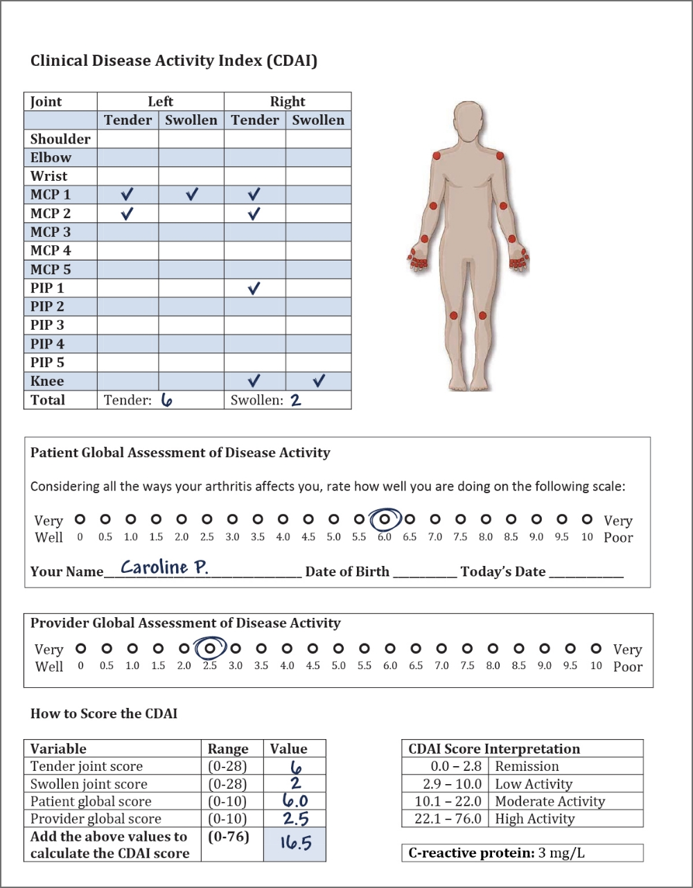

60-year-old female with RA, fibromyalgia and osteoporosis
Caroline is a 60-year-old female software engineer. She is 160 centimetres tall and weighs 45 kilograms. Caroline is underweight, with a BMI of 17.6 kg/m2. Her BP is normal (recently taken and it was 125/80 mmHg). She has been diagnosed with a vitamin D deficiency, for which she is taking vitamin D supplements (2,000 IU/day). She has had fibromyalgia since she was 23 years old. She often experiences fatigue, sleep difficulties, and irritable bowel syndrome. She takes analgesics as needed, and exercises regularly (walking and running). Menopause occurred at 48 years old. Caroline’s mother has had a hip fracture and her aunt has fibromyalgia. Caroline was recently diagnosed with osteoporosis. She is taking supplementary vitamin D, calcium and bisphosphonates. She was a smoker for 30 years until she quit last year, and frequently consumes alcohol (1-2 glasses of wine per day). Caroline is also taking antidepressants. She has had RA for four years and is being treated with MTX and a TNF inhibitor.
60-year-old female with RA, fibromyalgia and osteoporosis
“I recently had a follow-up with my rheumatologist. In addition to taking my height, weight and blood pressure, she counted my tender and swollen joints and asked me to rate how my arthritis affects me on a scale of 0 to 10, and we completed a few other forms and tests. She counselled me last year to stop smoking and although it was tough, I did it. She said it could impact my RA outcomes (dampen the response to therapy) when she started my biologic last year, and my risk for a heart attack.”
Her assessment was as follows:
Caroline’s CDAI is 16.5, indicating moderate inflammatory activity. However, some of the score is due to her patient global which is undoubtedly high due to her fibromyalgia. Her rheumatologist has rated her disease activity as low. Her CRP level is low. Clinically she has low disease activity.
Severe osteoporosis and lab workup
Caroline’s pain due to fibromyalgia is often 6/10. Her recent bone mineral density scan showed osteoporosis at the level of the lumbosacral spine with a T score of -2.8.
Caroline’s CBC and ALT are routinely done for MTX monitoring and are normal.
Laboratory tests should be done for vitamin D and calcium, parathyroid hormone (PTH) and TSH, tissue transglutaminase (TTG) and IgA, creatinine. In other words, this is a work-up for treatable secondary causes of OP (hyperparathyroidism, hyperthyroidism, abnormal calcium or vitamin D, renal dystrophy, reduced calcium absorption as seen in Crohn’s and celiac disease).
In general, a work-up is done according to the likelihood of a secondary cause for OP. Caroline is thin, had slightly early menopause, drinks alcohol regularly and has a family history of OP, so it is likely she has postmenopausal OP. RA is a minor risk for OP.
What is the impact of osteoporosis/fibromyalgia on RA treatment decisions?
High activity RA is associated with osteoporosis due to increased systemic inflammation.
True
RA is associated with reduced mobility and physical activity. This contributes to a decrease in muscle mass, resulting in sarcopenia, which leads to osteopororsis.1 Active RA is associated with increased bone loss and osteoporosis.2,3 This association is due to systemic inflammation, circulating autoantibodies, and pro-inflammatory cytokines.4 Use of glucocorticoids can increase bone loss. Treating active inflammation from RA such as with a TNFi may improve bone density slightly by suppressing systemic inflammation.5
Patients with fibromyalgic RA have greater pain, higher disease activity scores due to high pain/patient global scores, more tender joints than swollen joints, and poorer mental health.6,7,8 Rheumatologists must determine whether a high CDAI or other disease activity score is due to fibromyalgia or RA. Usually, a joint count is sufficient where the difference between swollen joints (none or very few) and tender joints (many) may be large. Musculoskeletal ultrasound may provide a useful, non-invasive tool to distinguish between inflammation due to RA and high disease activity due to fibromyalgia, but is usually not needed (only when on joint examination one cannot assess accurately if joints are swollen, for example in an obese patient).9 Remission on a composite score, and often low disease activity, will not occur if a patient’s global rating is always poor (rating high disease activity). Studies have reported that RA patients with fibromyalgia frequently do not reach remission due to patient-reported factors.10,11
Which of the following is NOT a risk factor or exacerbating factor for fibromyalgia?
Osteoporosis
Patients with RA are at a higher risk of osteoporosis. Increased RA disease activity is associated with bone loss. Patients may have double the occurrence of hip and vertebral fractures compared to age-matched healthy controls.12 Additionally, patients with celiac disease, liver or renal disease and severe weight loss are also at risk of osteoporosis. Patients who use corticosteroids to treat rheumatoid arthritis are at a higher risk of osteoporosis. Excessive alcohol consumption is a risk for OP.
Fibromyalgia
Individuals are more likely to develop fibromyalgia if they have RA. Females are at an increased risk of fibromyalgia; between 80% and 90% of patients diagnosed with fibromyalgia are females.13 Pain conditions, back pain, past abuse, PTSD, and past depression are also risk factors for fibromyalgia.13 Patients with a chronic painful condition are at higher risks of being diagnosed with fibromyalgia. In early RA, the incidence of fibromyalgia is 5 to 10 times more than the matched general population due to the development of a chronic painful condition which can cause poor mood, poor sleep, fatigue and fear (of a new diagnosis, possible job loss, loss of health, and possibly due to changes in the brain from chronic pain and inflammation).14
What messages would rheumatologists like to communicate to primary care physicians about the management of RA patients with comorbid osteoporosis/fibromyalgia? How can they best communicate their thoughts and plans?
Click to see Dr. Pope’s answer.


Active RA is associated with increased bone loss and osteoporosis due to:
Which of these patients typically have higher CDAI and patient global scores?
Which of the following is NOT a risk factor for fibromyalgia?
Pain and patient global score are strongly related.
Musculoskeletal ultrasound may be a useful, non-invasive tool in patients with fibromyalgia where there is uncertainty about joint activity/swelling in order to:
CDAI scores are more likely to be overestimated in:
RA remission rates using composite scores are lower in:
1. Sinigaglia L, Nervetti A, Mela Q, et al. A multicenter cross sectional study on bone mineral density in rheumatoid arthritis. Italian Study Group on Bone Mass in Rheumatoid Arthritis. J Rheumatol 2000; 27(11):2582-9.
2. van Staa TP, Geusens P, Bijlsma JW, et al. Clinical assessment of the long-term risk of fracture in patients with rheumatoid arthritis. Arthritis Rheum 2006; 54(10):3104-12.
3. Güler-Yüksel M, Bijsterbosch J, Goekoop-Ruiterman YP, et al. Changes in bone mineral density in patients with recent onset, active rheumatoid arthritis. Ann Rheum Dis 2008; 67(6):823-8.
4. Adami G, Saag KG. Osteoporosis Pathophysiology, Epidemiology, and Screening in Rheumatoid Arthritis. Curr Rheumatol Rep 2019; 21(7):34.
5. Siu S, Haraoui B, Bissonnette R, et al. A meta-analysis of tumor necrosis factor inhibitors and glucocorticoids on bone density in rheumatoid arthritis and ankylosing spondylitis trials. Arthritis Care Res (Hoboken) 2015; 67(6):754-64.
6. Haliloglu S, Carlioglu A, Akdeniz D, et al. Fibromyalgia in patients with other rheumatic diseases: prevalence and relationship with disease activity. Rheumatol Int 2014; 34:1275-80.
7. Duffield SJ, Miller N, Zhao S, et al. Concomitant fibromyalgia complicating chronic inflammatory arthritis: a systematic review and meta-analysis. Rheumatology (Oxford) 2018; 57(8):1453-60.
8. Zhao SS, Duffield SJ, Goodson NJ. The prevalence and impact of comorbid fibromyalgia in inflammatory arthritis. Best Pract Res Clin Rheumatol 2019; 33(3):101423.
9. Davies P, Kennedy J, Nair J, et al. O34 Cost-effectiveness of a clinical nurse specialist performing targeted musculoskeletal ultrasound in the rheumatology clinic. Rheumatology 2018; 57(suppl 3):key075.216.
10. Salaffi F, Di Carlo M, Farah S, et al. Prevalence of frailty and its associated factors in patients with rheumatoid arthritis: a cross-sectional analysis. Clin Rheumatol 2019; 38(7):1823-30.
11. Durán J, Combe B, Niu J, et al. The effect on treatment response of fibromyalgic symptoms in early rheumatoid arthritis patients: results from the ESPOIR cohort. Rheumatology 2015; 54:2166-70.
12. van Staa TP, Geusens P, Bijlsma JW, et al. Clinical assessment of the long-term risk of fracture in patients with rheumatoid arthritis. Arthritis Rheum 2006; 54(10):3104-12.
13. Arthritis Society. What are the risk factors for FM? Available at: https://arthritis.ca/about-arthritis/arthritis-types-(a-z)/types/fibromyalgia. Accessed March 2022.
14. Lee YC, Lu B, Boire G, et al. Incidence and predictors of secondary fibromyalgia in an early arthritis cohort. Ann Rheum Dis 2013; 72(6):949-54.
15. García-Leiva JM, Carrasco JL, Slim M, et al. Celiac symptoms in patients with fibromyalgia: a cross-sectional study. Rheumatol Int 2015; 35(3):561-7.